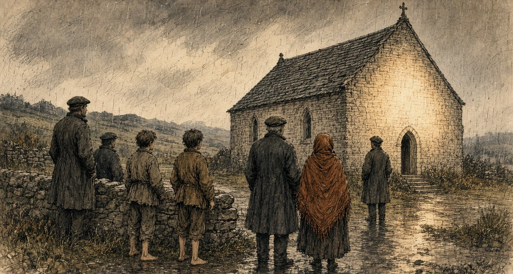
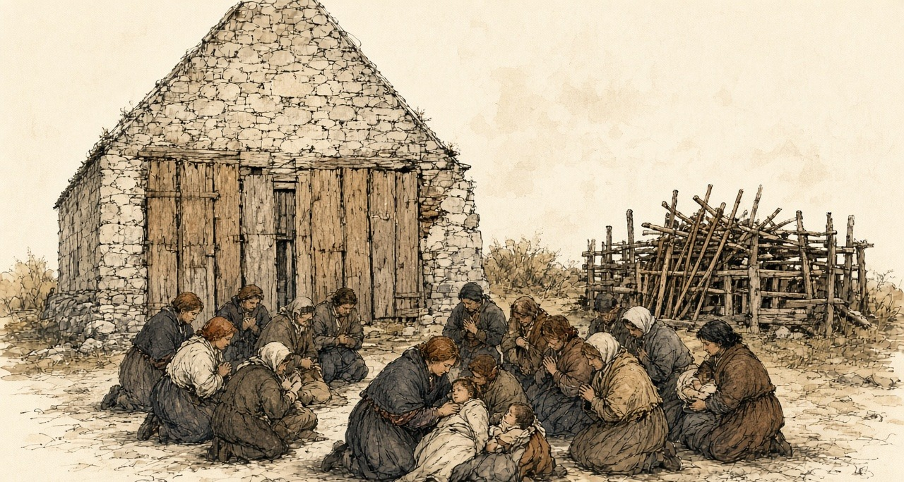
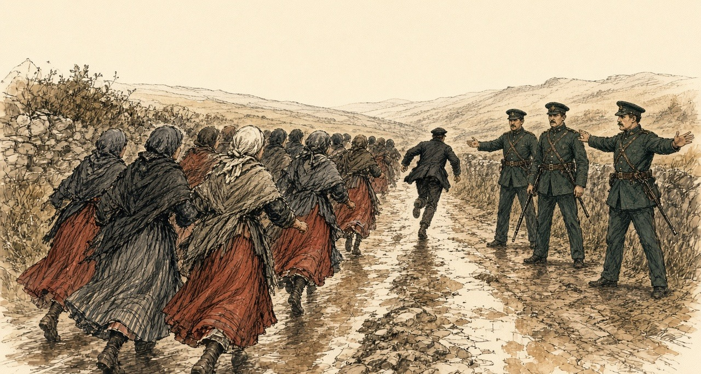
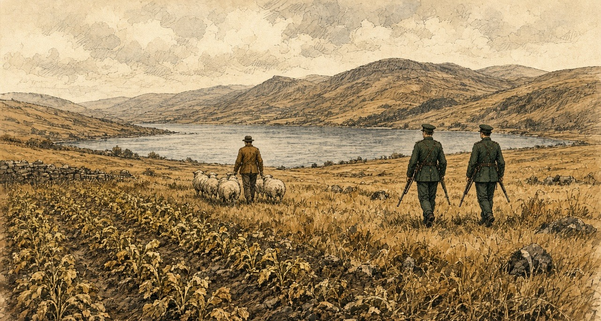
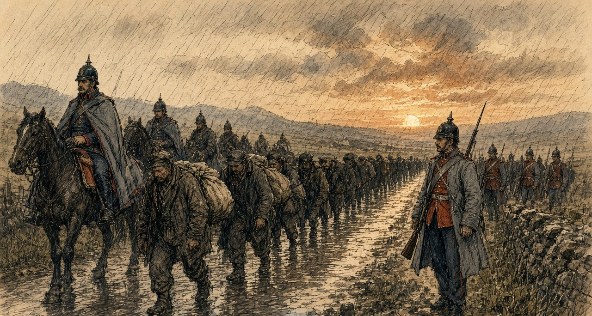
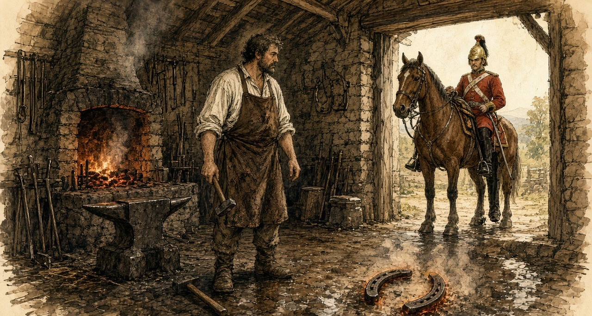
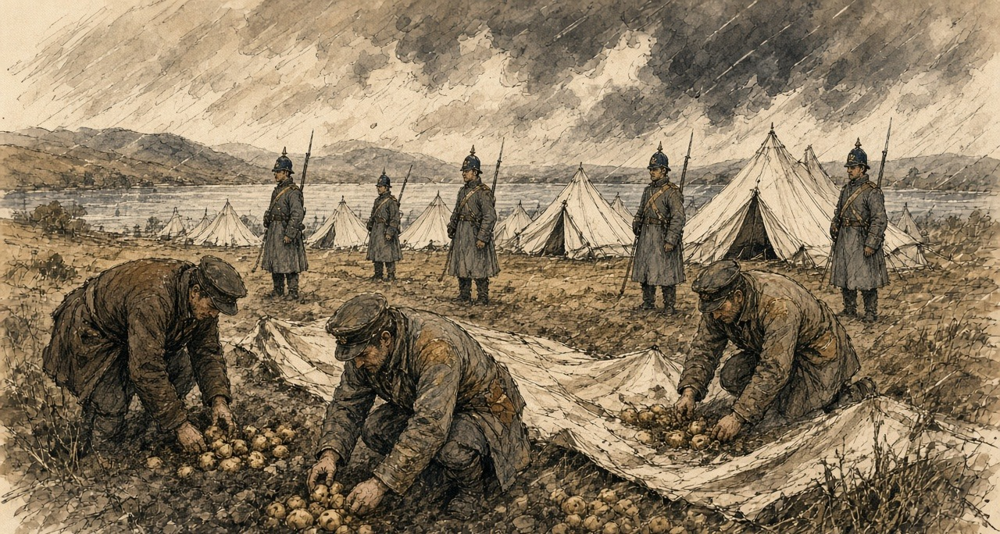

Chapter 13
A Shilling a Turnip, 1879–1880
Castlebar, Knock, Claremorris, Ennis, Lough Mask and Ballinrobe, 1879 and 1880
On Saturday, 16 August 1879, delegates from all over county Mayo met at Daly's Hotel in Castlebar. The Freeman's Journal called it the first convention of tenant-farmers held in Ireland since the repeal of the Convention Act. Michael Davitt stood up and read a declaration of principles.
"The land of Ireland belongs to the people of Ireland, to be held and cultivated for the sustenance of those whom God decreed to be inhabitants thereof."
He read the figures after that. Over six million acres of Irish land were owned by fewer than three hundred people, and twelve of them held 1,297,888 acres between them. Five million of the Irish people owned not a solitary acre. A standing army of semi-military police protected the few thousand landlords, and the landless millions paid for it. Under the land laws of England, the declaration said, that class took from twelve to fifteen million pounds a year out of the soil of Ireland.
The new body was the Land League of Mayo.
At Westport on 8 June Charles Stewart Parnell had told a meeting what a fair rent was. "A fair rent is a rent the tenant can reasonably pay according to the times, but in bad times a tenant cannot be expected to pay as much as he did in good times three or four years ago." If such rents were insisted on, he said, the scenes of 1847 and 1848 would be seen again. "You must show them that you intend to hold a firm grip of your homesteads and lands."
* * *
Knock, county Mayo, Thursday, 21 August 1879
It had rained since dawn, one dreary downpour all day, and it was still raining after the sun went down.
Patrick Hill was about thirteen. He lived in Claremorris, five miles off, and his aunt lived at Knock, and that day he had been drawing home turf from the bog on an ass. He was in his aunt's house at about eight in the evening when Dominick Beirne came in the door and cried out. "Come up to the chapel and see the miraculous lights, and the beautiful visions that are to be seen there."
The boy went after him, with another Dominick Beirne, and John Durkan, and a small boy of about six named John Curry. They ran south-west out of the village, and when the road turned and the gable of the chapel came in view they saw the light. It was clear and white and covered most of the gable, from the ground up to the window and higher. It changed while they looked, going high, and then not so high.
A low wall faced the gable about twenty-five paces off. People were there before them, leaning over it with their arms on the top. Some were praying. All of them were looking. John Curry was too small to see over and asked Patrick to lift him up till he could see the grand babies.
Patrick climbed over into the chapel yard and brought the small boy with him. The figures were full and round, as if they had a body and life. They said nothing, and when the people came nearer they seemed to go back a little towards the gable. The woman in the middle stood about two feet off the ground in white robes fastened at the neck, her hands raised to her shoulders with the palms facing, a crown on her head and a rose where the crown met the brow. He saw her eyes, the balls and the pupils and the iris of each, though he had no names for those parts and pointed to them afterwards when he told it.

To her right a man bent his head forward, with grey in his whiskers. To her left a figure dressed like a bishop preaching held a book open in his left hand. Patrick went so near that he looked into the book and saw the lines and the letters. Beyond was a plain altar with a lamb on it the size of a lamb eight weeks old, and round the lamb, the whole time, wings fluttering. He could not see their heads or faces.
An old woman went up and put her arms round the Virgin's feet. She found nothing in her arms or in her hands.
He stood an hour and a half in the pouring rain. He was very wet. He noticed that the rain did not wet the figures, though it wet him. Then he went away.
* * *
Knock, the same evening
Mary M'Loughlin, the Archdeacon's housekeeper, had passed the gable at seven, while it was still bright, and seen the figures, and walked on. She thought the Archdeacon had been sent some beautiful figures from Dublin and left them in the open air. Coming back half an hour later she stopped, and at half past eight she went home and told him it would be worth his while to go and see. "He appeared to make nothing of what I said, and consequently he did not go."
Bridget French was seventy-five. She was in Mrs. Campbell's house near the chapel when Mary Beirne came in for them all. Mrs. Campbell was dying. Bridget French went out at once, and when she saw the figures she threw herself on her knees and spoke in Irish. Father Corbett afterwards put the words into English: "A hundred thousand thanks to God and to the glorious Virgin that has given us this manifestation."
She went in to kiss the feet, and kissed them three times, and felt nothing in the embrace but the wall. The wind was from the south, driving the rain straight at the gable. She put her hands down and felt the ground under the figures carefully. It was perfectly dry. She stayed about an hour with her beads. She left only because she thought the brightness would be there always and she would see it again when she came back.
Dominick Beirne, who was twenty, stood at the wall and cried. After an hour he went to visit Mrs. Campbell, who was in a dying state. When he came back the gable was dark.
From 8 October three priests deputed by the Archbishop of Tuam took down the evidence of fifteen witnesses. The youngest, John Curry, could say only that he saw the fine images and the light, and went up on the wall to see the nice things.
On 21 October, in the Imperial Hotel in Dublin, a meeting called by Parnell formed the Irish National Land League. Its objects were two: "First, to bring about a reduction of rack-rents; second, to facilitate the obtaining of the ownership of the soil by the occupiers."
* * *
Knock and Claremorris, the winter and spring of 1880
The Tuam News printed the first account of the apparition on 9 January 1880. By then lights were said to have been seen on the gable again, and on the eve of the Epiphany two constables on patrol had seen a brightness there and could not say where it came from.
They came on foot, on horseback and in carts, whole families, some setting out before day with only the stars to guide them. They brought the blind, the lame, the deaf and the paralysed. Thursdays and Mondays became the days for Knock. The public car from Tuam to Claremorris cost two shillings and sixpence. Claremorris had two hotels and so had Ballyhaunis, and the two towns competed for the visitors.
A special correspondent of the London Daily Telegraph, in Mayo on business connected with the distress, drove out from Claremorris early that year. It was market day. The road was full of small farmers going the other way with asses loaded with oats and potatoes and hay, to sell them at what he called the advanced rates now ruling. Others were going his way, slowly on foot or fast on cars, some with the look of people who had been up all night.
He found the gable boarded over for half its height. The people, the Archdeacon told him, had stripped off the cement and then begun picking the mortar out from between the stones. They were still at it round the corners, where nothing stopped them. Ten paces from the gable stood a pen of rough boards with scores of crutches and sticks in it. A score of people knelt before the boards. Some had brought sick children, and bent over them between prayers.

All the benches inside would not seat more than thirty. At least two hundred people were there. The flagged floor was full of holes where pilgrims had dug under the stones for some blessed substance. At night they filled the chapel, and their praying could be heard far down the road.
The Archdeacon, Bartholomew Cavanagh, had never seen the figures. On one later night, he said, a messenger came for him while he was in bed after a tiring day, and he did not rise. He had a list of cures. One was his own. Called at night to a young man vomiting blood, he found him covered in it, near death, and sprinkled a few particles of mortar from the gable on a glass of water and told him to drink. The young man was now well, he said. The daughter of R. Walsh of Clifden was on the list, for bathing her eyes in water with a piece of the chapel's plaster in it.
That summer J. A. Fox reported to the Mansion House Relief Committee on the Claremorris poor-law union, in which Knock lay. On 5 June 588 people there were on outdoor relief, against 192 a year before. The relief came to between one shilling and sixpence and three shillings and sixpence a week for each family. In the division of Murneen the Mansion House's local committee was feeding 300 families and the guardians four. The landowners of the union had applied for £10,970 in public loans for their own estates, and £2,780 had been issued.
The chairman of the guardians, Arthur Crean, J.P., told Fox that thousands of people must have died of starvation throughout the union but for the relief committees.
* * *
The chapel yard at Knock, the spring of 1880
We were walking from before the light, the boy on my back the most of the way with his two legs hanging, and himself carrying the meal bag.
There is a thing in his eyes since the winter. They do be stuck shut in the morning with the yellow, and I wet them with my own spit to open them, and when they open he turns his head from the light like it was a blow.
The road was black with people. Men going in to the market against us with the oats on the asses, and the faces of them, thinking of the price. The relief is two shillings and sixpence to us in the week, and five of us in it.
There was boards up on the gable as high as a man's shoulder, and people kneeling in the wet before them, and a pen beside it full of crutches. Sticks the shape of a man's arm, worn white at the top from the hands.
Himself went round the chapel with the beads. I knelt.
I could not keep my mind on the prayer. The corner of the wall was beside me, and I could see where the stones were picked, the holes going in between them the depth of a finger, and a woman at it that minute with a nail. I put out my hand. The mortar came away soft and gritty and crumbled in my palm, and I closed my hand on it and looked round me like a thief.
I wet it in the cup. It went grey. I held the boy's head between my knees, and he fought me, and I put the grey water on his eyes with my finger, on the lids and in at the corners, and he roared, and I held him. I could feel the grit on my finger going in.
Inside they were lying on the floor. A man beside me had his arm down a hole to the elbow, scraping, and he brought up a fist of black clay and knotted it in his handkerchief.
We stopped the night. I sat against the wall with the boy on my lap and the praying going up and down all night, and the cold of the flags coming up through me into my back. In the morning I wet his eyes again before I opened them.
They opened. He turned his face from the light.
I put the bit of mortar that was left in the knot of my shawl and we went home.
* * *
Ennis, county Clare, Sunday, 19 September 1880
Parliament had risen, and Parnell made his first speech of the recess at Ennis. He asked what was to be done with a tenant who bid for a farm from which another tenant had been evicted.
A voice in the crowd answered, "Shoot him!"
Parnell said there was a more Christian and charitable way. The Annual Register reported it so: shunning him in the street, in the shop, in the market-place, even in the place of worship, "as if he were the leper of old."
Little attention was paid to it outside Ireland, the Register said. The English papers fastened on the end of the speech, where he wondered aloud whether the people might one day have to be told to strike against rent.
* * *
Lough Mask, county Mayo, Wednesday, 22 September 1880
Captain Charles Cunningham Boycott had farmed at Lough Mask for seven years and was agent there for the Earl of Erne. He was a Norfolk man, a clergyman's son, once an officer in the 39th Regiment, and had farmed on Achill for about twenty years before he came to the mainland. His house stood by the ruin of an old castle, five Irish miles from Ballinrobe.
When Lord Erne's tenants would not pay the rent asked, he took out processes of ejectment. On 22 September a process-server came out under police escort to serve them. Two men who wrote down what followed were on opposite sides.
Boycott wrote to The Times on 14 October. "On the 22nd September a process-server, escorted by a police force of seventeen men, retreated to my house for protection, followed by a howling mob of people, who yelled and hooted at the members of my family."
James Redpath, an American journalist working for the Land League, told an interviewer the following year that the process-server had eighteen constables and served three writs on the women in three cabins. A writ for rent, Redpath explained, could lawfully be served on the women of the house, or nailed to the door if they shut it. At the fourth cabin a woman he named as Mrs. Fitzmaurice said she would lose her life before she let him serve her. She shouted and raised the signal, which in that country could be a petticoat, and the women and girls of the neighbourhood came. The men back from the English harvest stood and looked on. The women did not want them to resist, because men went to jail a long time for it.
The women cheered for the Earl of Erne, who had been a decent landlord, they said, before Boycott. They cheered the constables. They groaned for Boycott and the process-server. Then they threw mud and manure and stones at him. He ran, and the constables could not protect him. He was knocked down several times. A couple of hundred women and girls went after him and did not stop until the boundary of the parish.
Boycott got a hundred constables in Ballinrobe for the next day, the last on which the writs could be served in time. The next day the process-server would not go.
* * *
A cabin in the parish of the Neale, 22 September 1880
The red was out on the Fitzmaurices' gable, and I dropped the pot.
We all knew the meaning of it since the summer, and still my legs went from under me at the sight of it, and the water running across the floor into the ashes and the steam going up hissing.
Himself was home from England nine days. He was at the fire with his boots off. He started to get up and I put my foot on his boot. If they take you it is the jail, I said, and long. Sit where you are.
The English money was in the tin on the dresser. Every shilling of it owed, the half to the shop and the half to the man that lent us the half-year in the spring, and Boycott wanting the half-year again on top of it. I touched the tin going out the door. I don't know why I did that.
The whole road was women running. Girls with their feet bare and their skirts held up off the mud, old women, women with a child on the hip. Nobody saying a word, only the breath going in and out of them.
The police were in the lane with the guns, the black of them against the hedge, and a small man in the middle with papers held in to his chest.
We came round him. I never stood so near to a peeler. I could smell the wet wool of him and the oil of the gun, and the rain running off the peak of his cap. Somebody started cheering, and we were all cheering, for Lord Erne, God knows why, and for the police, and the young peeler looked at me like I was astray in the head. Then we groaned for Boycott, and for the man with the papers, and the groan came up out of my own belly like a cow calving, a noise I never knew was in me.
Somebody threw the first of it.
I had a fistful of the lane in my hand, I don't know when I took it up, dung and wet straw and the muck of the road, and I threw it, and it hit him on the side of the head and stuck. He put his arm up. A stone went past my ear. He went down on his knees in the road and the papers went out of his hands into the water, and a peeler pulled him up, and he went down again.
Then he ran, and we ran after him. My chest was tearing. I could hear my own two feet and two hundred feet, and the peelers shouting stand back, stand back, and not one of them lifting a gun.

We stopped at the bounds of the parish. He kept running.
I could not get my breath. I bent over with my hands on my knees and spat in the road, and I looked at my hand, and it was black to the wrist, and shaking, and I could not make it stop.
Himself had the boots on when I came in. He said nothing. He went out to the well and brought me in a bucket, and I washed my hands in it, and washed them, and the water went brown.
* * *
Lough Mask House, 23 September to 14 October 1880
On 23 September, in Boycott's account, a hundred or so people came up to his house and ordered off his labourers, workmen and stablemen, and commanded them never to work for him again. His herd left. His blacksmith got a letter threatening him with murder. His laundress was ordered to give up his washing. A boy of twelve who carried his post-bag to Ballinrobe was struck and threatened on 27 September. Boycott sent his little nephew for the letters instead, and on 2 October the nephew was stopped on the road and threatened. The shopkeepers were warned off. "My farm is public property; the people wander over it with impunity. My crops are trampled upon, carried away in quantities, and destroyed wholesale."
Redpath said Boycott's labourers had struck that summer for sixty cents a day instead of thirty-two, as he put it for American readers, for ten and twelve hours' work. On the night after the process-server was driven off, the men advised Boycott's herdsmen and car-drivers to strike, and the women advised his servant girls, and that evening every one of them left. Next morning a shopkeeper told Mrs. Boycott that although she was a decent woman, and they all liked her, the people could not stand that baste of a husband of hers any longer, and she could not sell them any more bread. Redpath rode past the estate after the letter appeared and said the fences and gates were in perfect order.
On 12 October Redpath wrote to the Chicago Inter-Ocean quoting the parish priest of the Neale, Father John O'Malley. Lord Erne's tenants, the priest said, had been supported for nine months on charity, and had got no help of any kind from the landlord.
About three days after the people stopped dealing with Boycott, Redpath said, he was dining with Father John at the presbytery and could not eat, and told the priest he was bothered about a word. Ostracism would not do; the peasantry would not know it. Father John looked down, tapped his big forehead, and said: "How would it do to call it Boycott him?"
* * *
The road to Lough Mask House, Saturday, 23 October 1880
Bernard Becker, special commissioner of the London Daily News, had been sent to describe the disturbed districts. On the morning of the 23rd word reached him at Westport that Boycott had come home by train to Galway and the steamer up Lough Corrib, and telegraphed his escort to meet him at Cong.
Becker hired a car. On the road he met a few people riding to town on asses, or driving an ass with panniers of turf that would fetch fourpence or fivepence. All seemed thinly clad. A fearfully cold wind came down off Nephin and the snow on the other mountains. Then near Lough Carra the car came out into bright sunshine, and by Lough Mask the heat was almost oppressive.
He passed a field of mangolds, many of them weighing from a stone to a stone and a half. Beyond a turn in the road he came on a flock of sheep. A woman in a white woollen shawl was heading them back, and a man in a leather shooting-jacket was driving them through a gate with a bull terrier. From her voice she was educated. He carried himself like a soldier. Neither of them knew how to drive sheep, and the dog did not either.
Two tall constables in full uniform walked behind the shepherd with loaded carbines. When he went into the field they followed him a few yards back. Every time he turned after a stray, or doubled, the two armed men turned and doubled after him.

The shepherd and shepherdess were Mr. and Mrs. Boycott.
Ten constables garrisoned the place, some in a hut and some in the house. One female servant was left. The laundress had refused that Tuesday to wash for them. The baker in Ballinrobe was afraid to send bread, and the butcher meat. When the men left, Boycott had set the young ladies of the family to reaping and binding. The corn stood in the field. In the ground, Becker reckoned, were at least five hundred pounds' worth of potatoes and other root crops, and nobody would buy them at any price.
No woman in Ballinrobe would wash him a cravat or bake him a loaf. All the people would say was that they were sorry, and that they dared not. Everyone advised him to leave. His answer to Becker was: "I can hardly desert Lord Erne, and, moreover, my own property is sunk in this place."
From the steps of Lough Mask House the prospect was one of the fairest Becker had seen. The house was not quite so good as a large farmer's homestead in England.
* * *
Dublin, Lough Corrib and Ballinrobe, 1 to 11 November 1880
When the papers carried Boycott's letter, a gentleman in Ulster wrote that if £500 were subscribed he would march to Lough Mask with volunteers enough to save the crops. Nearly £800 came in within a few days. Redpath said Lord Erne headed the subscription, anonymously, with £10.
On the evening of Monday, 8 November, the Chief Secretary, W. E. Forster, told the Dublin press that no large body of armed Orangemen would be let go, but that any number of men Boycott needed for the sole purpose of saving his crops would have the fullest protection, to the farm, at the farm and back. Boycott said fifty would do. That night troops went west, five hundred from Dublin and four hundred from the Curragh.
On the 10th Becker came up Lough Corrib on the steam packet Lady Eglinton with thirty-two constables summoned from Galway. At Cong he asked his driver to go to Ballinrobe by Lough Mask House. It was not on the way, the driver said. He would go to Galway or to Newport, but not a foot towards Lough Mask House. Was he afraid? He was afraid of nothing. But would his honour want to set the whole country against him? One driver, Becker heard, had been cruelly beaten for carrying a policeman to the house.
Ballinrobe that night held some 750 soldiers, Hussars, Dragoons, Engineers and two regiments of foot, and nearly two hundred constabulary. A great part of them were in tents on the fair green. The Hussars had been ordered out of Dublin without rations. Their cooking pots took three days to follow them.
That evening Lord Erne's tenants handed Boycott a letter. "Kilmore. Nov. 10, 1880. C. C. Boycott, Esq. Sir, In accordance with the decision made in Lord Erne's last letter to us, we want you to appoint a day to receive the rents. The Tenants. A reply requested."
He answered that he would receive them at ten the next morning. An hour after ten he got their notice.
"The tenants request an answer to the following before they pay you the rent: 1st. Don't you wish you may get it? 2nd. When do you expect the Orangemen, and how are they to come? 3rd. When are you going to hook it? Let us know, so that we may see you off. 4th. Are you any way comfortable? Don't be uneasy in your mind: we'll take care of you. Down with the landlords and agents. God save Ireland."
People said, as Becker passed them, "He will not hear the birds sing in spring."
* * *
Claremorris, Thursday, 11 November 1880
The volunteers from Cavan and Monaghan met at Mullingar and came on by train. The station at Claremorris was lined with troops. The train due at 2.41 came in at 3.30, and it was nearly dark before the column could start.
Becker put the crowd at perhaps two thousand. They groaned when the train came in, and again and again as the sixty-three officers and men of the Ulster contingent went to the cars hired for them. The drivers refused. They were not bound to carry Orangemen, they said, and would not. The Annual Register had boys and girls throwing mud.
The Ulstermen walked about thirteen miles, at sundown, on a muddy road, in light rain and heavy rain by turns. When a sound came out of the dark it was a yell. At Hollymount it came again, and louder at Ballinrobe, where the streets were full. That night they were kept inside the infantry barracks. Their carts came on the next afternoon under escort of Dragoons.

* * *
A forge at Claremorris, Friday, 12 November 1880
The soldier said it was the Army's horse.
He had it by the head, a big gelding with the near fore bare and the hoof broke at the edge where the shoe was cast on the road. A dragoon, the brass on him and the mud up to his knees. He said the Army Service Corps, and a shoe wanted, and quick.
I had nothing against the Army. I blew up the fire.
You put the bar in and the boy on the bellows, and you watch it go red and then the colour of a turnip and then near white, and the sparks coming off it like a cat spitting. I had it out on the anvil, turning it, the ring of the hammer going up into my shoulder the way it does, and the heat of it on my face.
I had the shoe made. I had it on the end of the pritchel, hot, and I lifted the foot and laid it on, and the smoke of the horn came up into my nose.
Then Mick Hession came in the door and stood there. And then he said the cart that horse came out of is an Orange cart. It is for Boycott's.
My hand opened.
I did not open it. It opened. The hammer went down on the floor, and the nails out of my mouth after it into the dirt, and the shoe dropped off the pritchel and I heard it hiss in the wet.

The dragoon looked at me. I looked at the shoe.
He said what ails you, man, there's money in it. I said there's not money enough in the county Mayo.
I went out the back and stood in the rain with my hands shaking and the heat still in them. I could hear the boy inside letting the fire die.
They got the shoe on him after, I heard, among the soldiers. Not a smith from here to Ballinrobe would put a hand to it, and not a man in the county would drive the cart.
* * *
Ballinrobe to Lough Mask, Friday, 12 and Saturday, 13 November 1880
At eleven on the Friday the march set out from the barracks: constabulary first, then a squadron of the 19th Hussars, then two hundred infantry closed completely round the Ulster workmen and their leaders, Somerset Maxwell, who had stood for Cavan as a Conservative, and Mr. Goddard, a solicitor of Monaghan. The waggons of the Army Service Corps came last.
One Ulsterman told Becker he was a steward, not a labourer, and had come for the fun of the thing and to show there were still loyal men left in Ireland. He carried a double-barrelled gun of his own, a repeater of Mr. Maxwell's and several full-sized revolvers.
Hardly anybody came out. Past the town the followers were a couple of cars, a market cart, a lady in a gig and a dozen bare-legged girls whose only jeer was a question. "Wad ye dig auld Boycott's pitaties, thin?" Becker saw almost no men. There were scouts on every hill, people told him, taking note of the Orangemen's faces.
In the afternoon sun the column went up a slight hill between grey walls, red coats with a black head and tail, autumn trees beyond and the purple mountains past Lough Mask. A crowd had been expected at the house. The only people there were the police at the lodge.
Boycott received the officers, the Ulster leaders and the magistrates on the green in front of the tents in a dark shooting-dress and cap, with a double-barrelled gun in his hand. The troops who had held the ground overnight had got no rations either. They had killed sheep, and chickens and geese, and for want of other fuel had burned Lord Erne's trees. When the Ulstermen were told off to their tents, the Monaghan men would not give a Cavan man as much space as a lark could stand on.
That night a storm went over Ballinrobe and carried away two tents on the fair green. In the morning the cavalry horses stood among fallen leaves under coverings too thin for the weather.
At Lough Mask, in the gale, a large party of Ulstermen worked hard in a potato field getting the potatoes out before the rain ruined them. Boycott remarked that left in the ground they would have been spoiled anyway, and might as well be ruined one way as another. The rest were in the barn threshing his oats with a small machine called a Tiny. Boycott had put away the gun. He was in an old herdsman's overcoat with a crook in his hand, and did not seem very grateful. Officers kept finding the mutton bones of sheep nobody had paid for.

"There will be a fearful bill for somebody to pay," Becker wrote, "when the whole business is over."
He stood watching them dig. The rain seemed to cut at his face like a whip. The Robe was running at twice its size. The soldiers in the tents, he wrote, had one consolation: the Orangemen were under canvas too.
* * *
Lough Mask and Ballinrobe, Friday, 26 November 1880
The Ulstermen started home on the 26th. All through the fortnight anonymous proclamations had called on the men of Mayo to resent the invasion of their county, and there were false alarms nearly every day. No attack came. The Land League had told the people to give the soldiers and Orangemen nothing, let them no cars, sell them no food, and look at them and laugh.
At Ballinrobe, the Annual Register said, the column met ostentatious indifference. Even the children had been schooled to greet it with ironical laughter.
Davitt, writing more than twenty years later, said Father John O'Malley went round early that morning to the houses on the road and ordered everyone indoors, and had the shops of Ballinrobe shut, and walked in front of the column himself with his umbrella over his shoulder to see the way was clear.
* * *
The same cabin, the same morning
Father John said the door shut and the door was shut.
I felt them before I heard them. A shiver in the dresser, the cups. Then the horses, a great many horses, and the jingle off them like money in a bag, and then the boots.
Himself was at the window with the corner of the sack lifted. I said come away from that. He did not come away.
The children were under the table. The small one put her hand on my foot and kept it there.
It went on a long time. Longer than Mass. The boots going past, and past, and a man shouting in an English I could not follow, and the wheels of the carts grinding. Then a laugh outside, a girl's, high, just the one, and then nothing but the boots again.
I sat on the stool with my hands in my lap. I looked at my hands.
When it was gone you could hear the rain on the thatch again. Himself let down the sack. He said there was not a Christian on the road the length of it, only themselves and the priest walking in front with the umbrella on his shoulder.
The tin was on the dresser. Nobody came that winter for the half-year.
* * *
Ballinrobe, Dublin and London, November and December 1880
Boycott and his family left Lough Mask with the expedition, by the Annual Register's account. Davitt gave the date as 1 December. A congratulatory dinner in Dublin had been planned for him, but there were threatening letters, and it was thought prudent that he go on to London without delay.
Parnell wrote at once to his sympathisers in America. The services of seven thousand men, he said, had been needed to save the crops on a single farm, and every pound of potatoes and every turnip saved had cost the Government a shilling.
The Annual Register put the police and military engaged in keeping the peace in Mayo at seven thousand, and the soldiers at Ballinrobe at about nine hundred. In October Becker had reckoned the crops in the ground at five hundred pounds. Davitt gave the potatoes and other crops lifted at about £350, which he said was Boycott's own estimate, and the cost of lifting them, to the state and the expedition's supporters, at £3,500.
Lord Erne got no rent from Lough Mask that autumn. His tenants wrote to him, Redpath said, apologising for their treatment of his agent. They would never pay Boycott a shilling. As soon as they conveniently could, they would pay any other person the Earl appointed to receive it.
Important names
- Boycott, Charles (30 mentions in this chapter): Land agent in County Mayo for Lord Erne whose ostracism in 1880 gave the English language the word 'boycott'.
- Davitt, Michael (4 mentions in this chapter): Mayo-born Fenian, convict prisoner, and founder of the Irish National Land League.
- Parnell, Charles Stewart (5 mentions in this chapter): Leader of the Irish Parliamentary Party and president of the Irish National Land League.
- Parnell, Henry (5 mentions in this chapter): Irish MP and financial reformer who advocated the repeal of the 1800 Union protective duties.
Sources
- The Freeman's Journal, 18 August 1879, "Land League Convention at Castlebar" (Daly's Hotel, Saturday 16 August 1879; "the first convention of tenant-farmers held in Ireland since the repeal of the Convention Act"; Daly, Judge and Louden; Davitt's declaration of principles: "The land of Ireland belongs to the people of Ireland"; six million acres and fewer than three hundred owners; twelve owners and 1,297,888 acres; five millions owning not an acre; the semi-military police; twelve to fifteen million pounds a year). The Freeman's Journal, 9 June 1879 (Parnell at Westport, 8 June 1879: "A fair rent is a rent the tenant can reasonably pay"; 1847 and 1848; "a firm grip of your homesteads and lands"). The Freeman's Journal, 22 October 1879 (the meeting at the Imperial Hotel, Dublin, 21 October 1879; the resolution forming the Irish National Land League; its two objects). All three as reprinted in Michael Davitt, The Fall of Feudalism in Ireland (London and New York, 1904), in the chapters on the Irishtown meeting and the Land League of Mayo and at pp. 159–61 and 171. Internet Archive copy falloffeudalismi00daviuoft.
- John MacPhilpin, ed., The Apparitions and Miracles at Knock; also, the Official Depositions of the Eye-Witnesses (Dublin: M. H. Gill & Son, 1880; preface dated Tuam, 25 March 1880). Internet Archive copy TheApparitionsAndMiraclesAtKnock. Ch. II (the multitudes; carts, horseback, side-cars and starting before day; the blind, lame, deaf and paralysed; Thursdays and Mondays; the downpour of 21 August; the cross on the tower; the sacristy gable, the window twelve feet up and the coat of cement; the first account from the Tuam News of 9 January 1880, with the lights of New Year's night and the eve of the Epiphany and the two constables; the cement taken from the wall). Ch. III (Knock in the Claremorris Union; five miles from Claremorris; the car fare of 2s. 6d. from Tuam; two hotels in Claremorris and two in Ballyhaunis and the rivalry). Ch. V, the depositions taken before Archdeacon Cavanagh, Canon Waldron and Canon Bourke, deputed by the Archbishop of Tuam: Patrick Hill, signed 8 October 1879 (the turf and the ass; Dominick Beirne's words; John Durkan and John Curry; the light "going sometimes up high and again not so high"; the people leaning on the wall; "the grand babies"; crossing the wall; the figures "full and round"; the robes, hands, crown and rose; the eyes, "the balls, the pupils, and the iris"; the feet; the old woman who "found nothing in her arms or hands"; St. Joseph's whiskers; the bishop, the mitre and the book, "I saw the lines and the letters"; the altar and the lamb "eight weeks old"; the wings; an hour and a half in the pouring rain; "the rain did not wet the figures"); Mary M'Loughlin (passing at seven; the figures from Dublin "left in the open air"; Mary Beirne; the family sent for; telling the Archdeacon, "He appeared to make nothing of what I said, and consequently he did not go"); Bridget French, aged 75, her evidence given in Irish and translated by Father Corbett (at Mrs. Campbell's; "A hundred thousand thanks to God and to the glorious Virgin that has given us this manifestation"; kissing the feet three times; "nothing in the embrace but the wall"; the south wind and the dry ground; the rosary; thinking the brightness "would continue there always"); Dominick Beirne, aged 20 (tears; going to Mrs. Campbell, "in a dying state"; the vision gone on his return); John Curry, about six ("the fine images and the light"); the fifteen witnesses. Ch. VII, "A Mayo Lourdes," from the London Daily Telegraph (its correspondent on a mission connected with the Irish distress; market day and the asses with oats, potatoes and hay at "the advanced rates now 'ruling'"; the travellers who had kept vigil; the gable boarded half its height and the mortar picked from the stones; the pen of crutches; the kneelers and the sick children; at least two hundred in the chapel and seats for thirty; the floor "full of holes"; the praying by night; the Archdeacon's account of not rising; the cure with mortar in water; the list, including the daughter of R. Walsh of Clifden).
- The Irish Crisis of 1879–80: Proceedings of the Dublin Mansion House Relief Committee, 1880 (Dublin, 1881), Special Reports, J. A. Fox, "Condition of the Peasantry of the County of Mayo during the Famine Crisis of 1880," pp. 104–15 (destitution about Ballyhaunis, Knock and Claremorris, less widespread than about Swinford; Claremorris Union outdoor relief 192 and 588 on 5 June; 1s. 6d. to 3s. 6d. weekly per family; Murneen, 300 families and four; £10,970 applied for and £2,780 issued; Arthur Crean, J.P., "thousands of persons must have died of starvation throughout the Union but for the help afforded by the Relief Committees"). Internet Archive copy irishcrisisof18700dubluoft.
- The Annual Register ... for the Year 1880 (London, 1881), English History, pp. 108–9 (Parnell at Ennis, 19 September 1880: the Land Commission; "Shoot him!"; shunning "as if he were the leper of old"; little attention outside Ireland; the peroration on a strike against rent) and pp. 118–21 (Boycott's letter to the Times dated 14 October; the Ulster offer for £500 and nearly £800 subscribed; Forster's statement to the Dublin press on the Monday evening; fifty men; five hundred troops from Dublin and four hundred from the Curragh; about 900 soldiers at Ballinrobe; the rendezvous at Mullingar and the train to Claremorris on 11 November; 7,000 men in Mayo counting police; boys and girls throwing mud; the anonymous proclamations and false alarms; the return on the 26th; "ostentatious indifference" and the children's "ironical laughter"; Boycott leaving with the expedition, the dinner abandoned and London; Parnell's letter to America: 7,000 men, and every pound of potatoes and every turnip costing the Government a shilling). Internet Archive copy in.ernet.dli.2015.13398.
- C. C. Boycott, letter to the editor, The Times, 18 October 1880, dated Lough Mask House, 14 October (the process-server and seventeen police; "a howling mob of people"; 23 September; the herds; the blacksmith's letter threatening murder; the laundress; the boy of twelve struck on 27 September; the nephew stopped on 2 October; the shopkeepers; the postmistress and the telegraph messenger; "My farm is public property"; the gates, walls and stock). The letter's date and substance are confirmed by the Annual Register for 1880, p. 119.
- James Redpath, Talks about Ireland (New York: P. J. Kennedy, 1881), "An Interview with James Redpath" (the coining of the word at pp. 81–2, as Davitt also cites it; the wage strike, "sixty cents instead of thirty-two cents a day," and Mrs. Boycott going from cabin to cabin; the refusal of abatement; English harvest money, shopkeepers and gombeen men; eighteen constables; three writs served on the women and the law on serving writs for rent; Mrs. Fitzmaurice at the fourth cabin and the signals; the men looking on and the reason; the cheers for Lord Erne and the constables, the groans, and "mud and manure and stones"; the process-server knocked down several times and pursued by "a couple of hundred women and girls" to the parish boundary; the hundred constables and the refusal next day; the strike of herdsmen, car-drivers and servant girls; Mrs. Boycott at the shop, "a dacent woman"; Redpath's ride past the estate; his letter to the Inter-Ocean of 12 October quoting Father John O'Malley on the tenants supported nine months by charity; the coining of the word at the presbytery of the Neale, "How would it do to call it Boycott him?"; the tenants' letter to Lord Erne; Lord Erne heading the subscription anonymously with £10). Internet Archive copy talksaboutirela00redpgoog. Redpath worked for the Land League and is given as what he said.
- Bernard H. Becker, Disturbed Ireland: being the Letters written during the Winter of 1880–81 (London: Macmillan, 1881), reprinting his letters to the Daily News. Internet Archive copy disturbedireland00beckuoft. Letter I, "At Lough Mask," dated Westport, 24 October, pp. 1–17 (Boycott's escort; the route by Galway and Cong; the drive from Westport, the turf at fourpence or fivepence, the cold wind off Nephin and the sunshine; the fresh car at Ballinrobe; the mangolds; the sheep, the shawl, the leather jacket, the bull terrier and the two constables with loaded carbines; Boycott's history; the garrison of ten; one female servant; the laundress, baker and butcher; the young ladies reaping; at least five hundred pounds' worth of root crops; "they 'dare not'"; "I can hardly desert Lord Erne"; the prospect from the steps). Letter VI, "The Relief of Mr. Boycott," dated Ballinrobe, 10, 11, 12 and 13 November, pp. 120–41 (the Lady Eglinton and its passengers; the car-driver at Cong and "would your honour want to set the whole country against him?"; the beaten driver; the 750 military and their units; nearly two hundred constabulary; the tents on the fair green; the Hussars without rations and the cooking pots; the tenants' letter from Kilmore of 10 November and their notice of 11 November, quoted in full; "He will not hear the birds sing in spring"; the train due 2.41 arriving 3.30; perhaps two thousand people; sixty-three officers and men; the drivers' refusal; the walk of about thirteen miles; Hollymount and Ballinrobe; the men kept in barracks; the march of the 12th and its order; Maxwell and Goddard; the steward with his arsenal; the dozen bare-legged girls, "Wad ye dig auld Boycott's pitaties, thin?"; scouts on the hills; the column on the hill; Boycott in shooting-dress with a gun; the slaughtered sheep and Lord Erne's trees; the Cavan and Monaghan quarrel over tents; the storm of the 12th and 13th and the two tents carried away; the potato digging in the gale; the Tiny threshing machine; the herdsman's overcoat and crook; the mutton bones; "There will be a fearful bill for somebody to pay"; the Claremorris blacksmith who dropped his hammer, nails and shoe on learning the horse was from an Ulster cart, and the shoe put on "among the military and police"; no driver at any price; the rain "like a whip"; the Robe at double its size; "the Orangemen are under canvas too").
- Michael Davitt, The Fall of Feudalism in Ireland (1904), "Hold the Harvest!", pp. 273–7 (Father John O'Malley; the League's manifesto to leave the expedition alone and give it no cars or food; the morning of the departure, the houses ordered indoors, the shops shut, the priest with his umbrella before the column; £350 as Boycott's own estimate of the crops lifted and £3,500 as the cost; Boycott leaving Lough Mask on 1 December). Davitt was not at Lough Mask and wrote twenty-four years later; he is given as what he said.